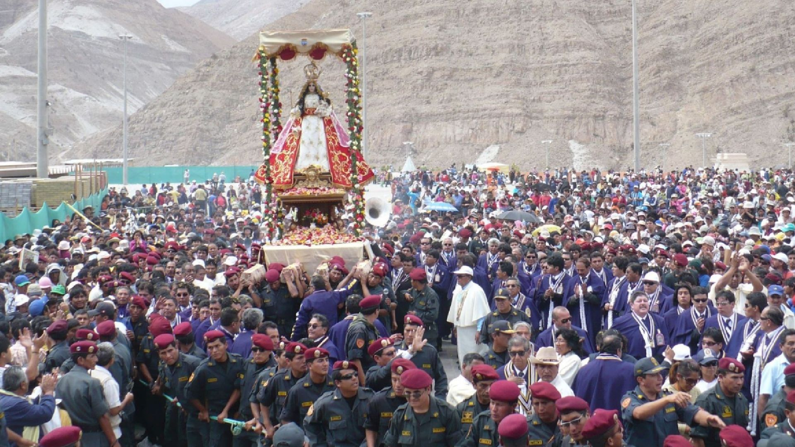
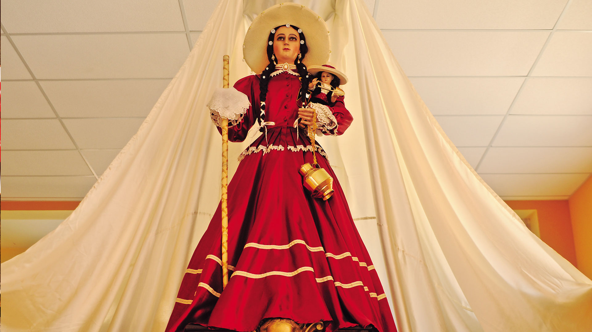
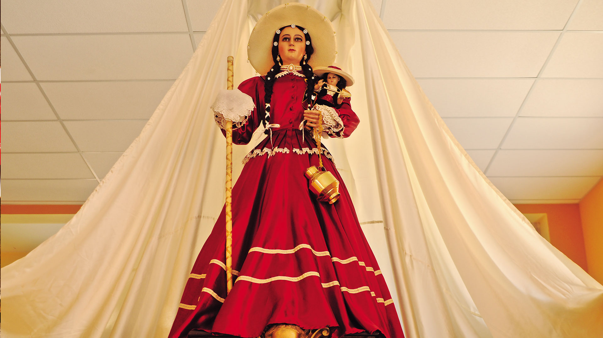
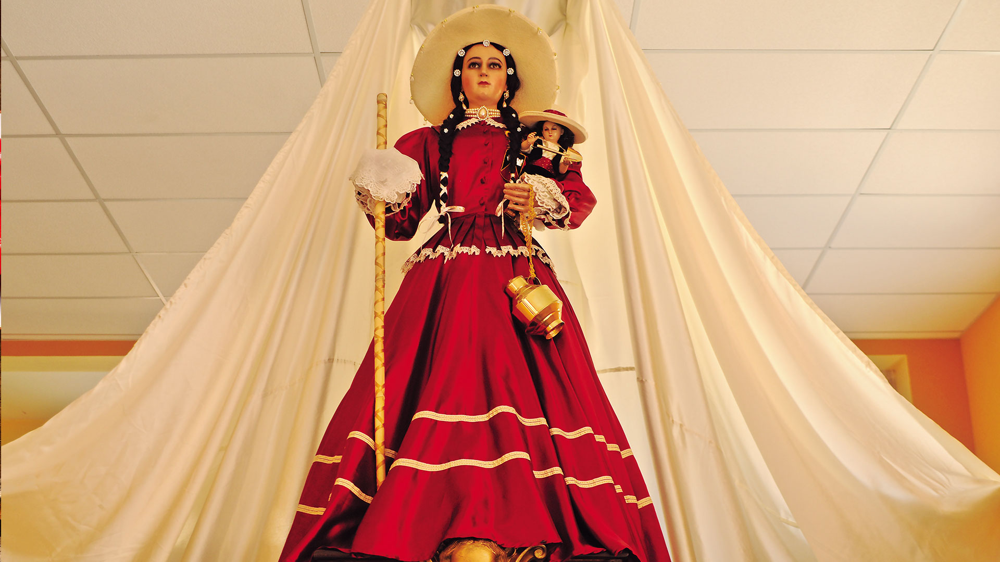

Fiesta de la Virgen de Chapi: Fe y Devoción
Cada 1 de mayo, miles de fieles peregrinan al Santuario de la Virgen de Chapi, ubicado en el distrito de Polobaya, Arequipa. Esta celebración religiosa es una de las más importantes del sur del Perú y atrae devotos de todas partes del país.
Historia
La devoción a la Virgen de Chapi data del siglo XVIII. Según la tradición, su imagen fue trasladada a distintos lugares, pero siempre regresaba milagrosamente a Chapi, lo que consolidó la creencia de que la Virgen deseaba permanecer en ese sitio.

 


Eventos y Actividades
- Peregrinación: Miles de fieles caminan varios kilómetros hasta el santuario en señal de devoción.
- Misas y ceremonias: Se celebran eucaristías durante toda la jornada en honor a la Virgen.
- Bendición de objetos: Los devotos llevan imágenes y artículos religiosos para ser bendecidos.
- Fuegos artificiales: La festividad culmina con espectáculos de luces y música tradicional.
- Feria gastronómica: Se ofrecen platos típicos como el adobo y el caldo de cordero.